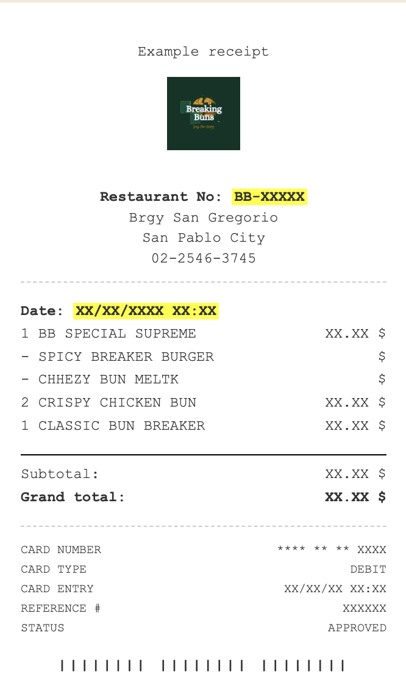

Home
Promos
Products
Contacts
Quality Control
Refer to your receipt:

Restaurant Number
Date of Visit
Time of Visit
How did you place the order?
KIOSK
FRONT COUNTER
MOBILE / TABLE
MOBILE PICK UP
PHONE ORDER
DRIVE THROUGH
DELIVERY PARTNER
BREAKING BUNS APP
Submit Report